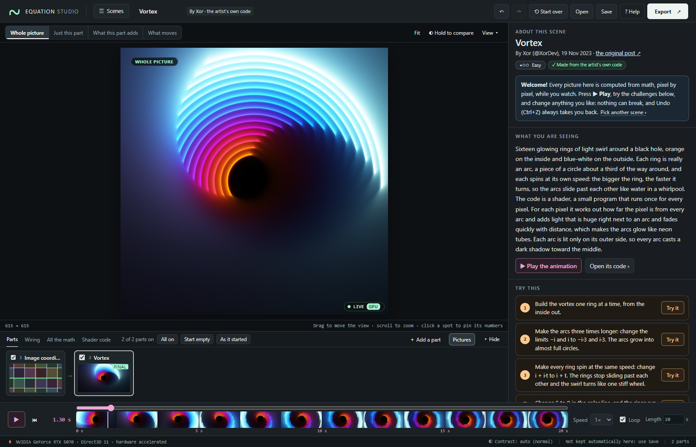
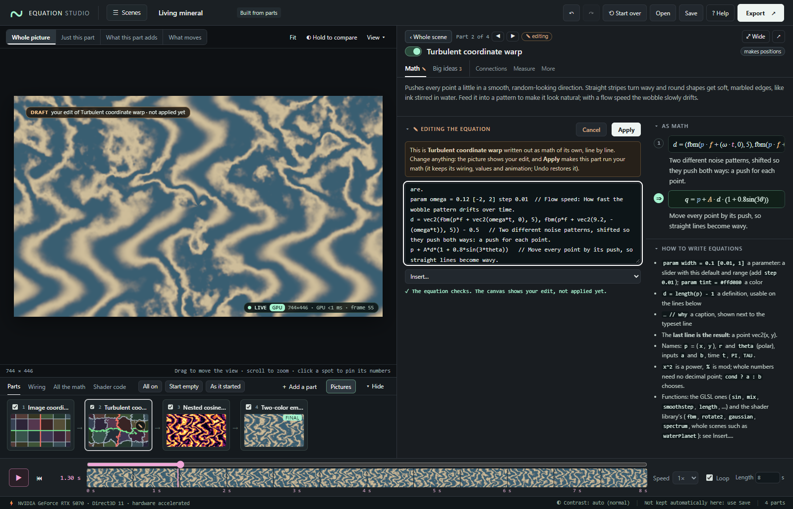
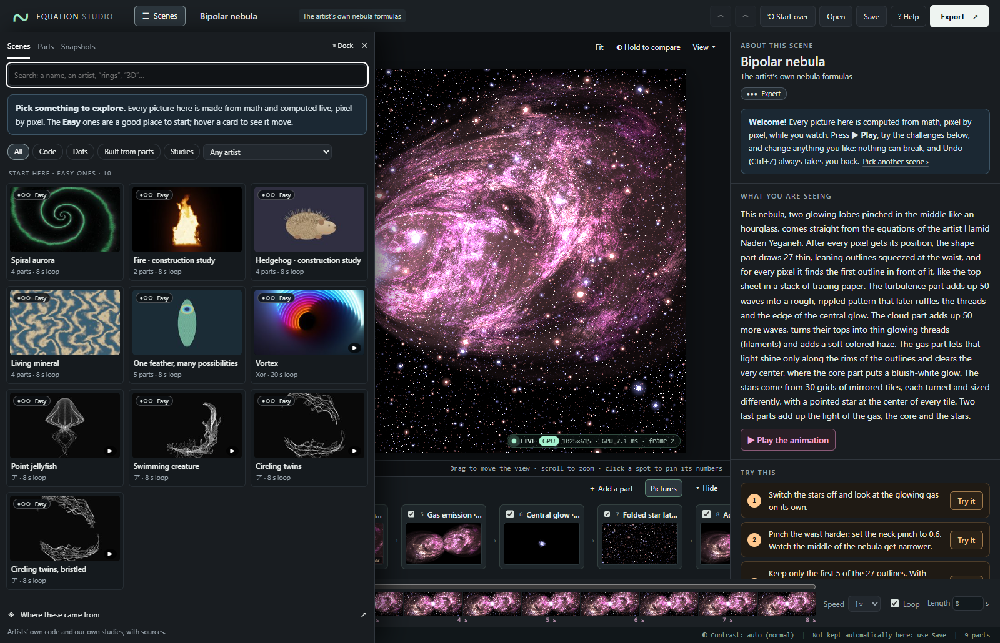
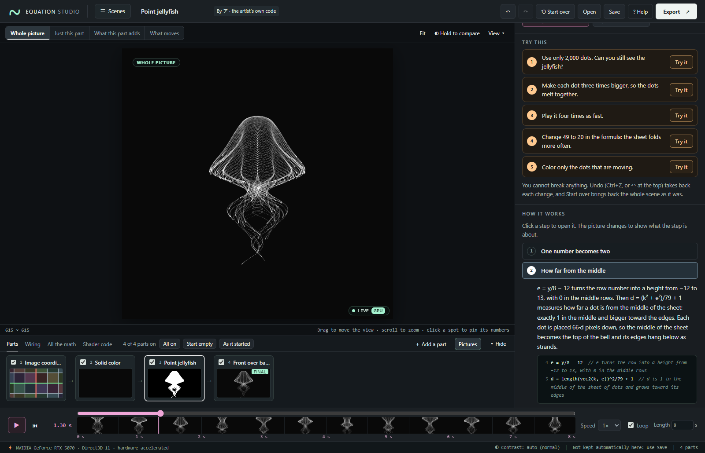
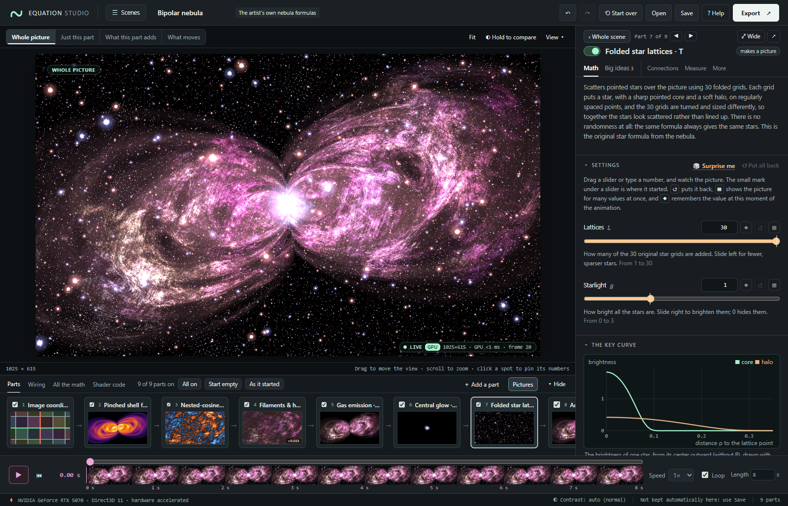
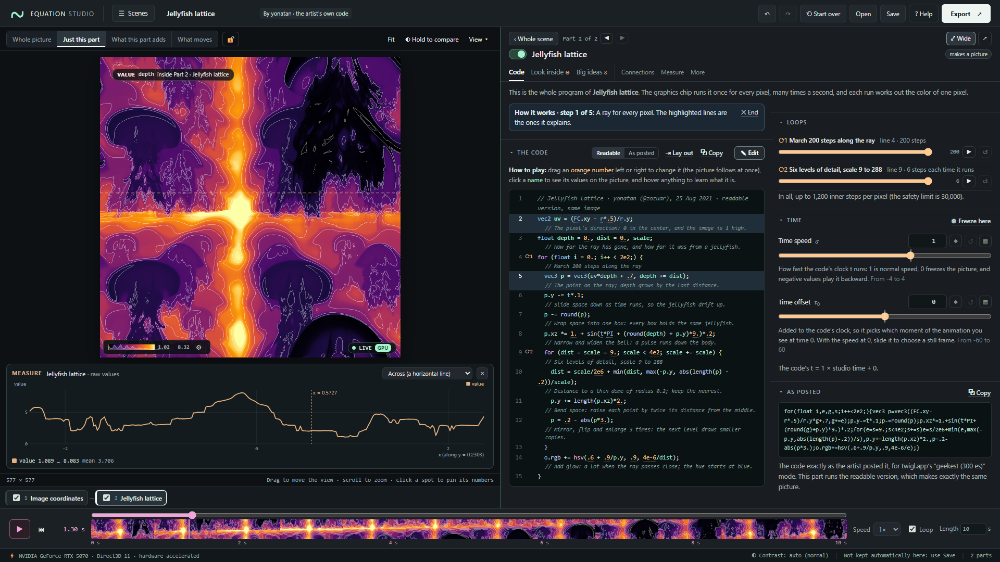

A local GPU laboratory for equation art: see what every equation computes, why it is written that way, and what happens when you change it.

Every picture is a typed graph of small equations evaluated live, per pixel, on your GPU. The studio is built so that a curious newcomer can understand, explore, take apart and put together these pictures:
param lines that become sliders, definitions name
in-between values, and // captions explain each line. The
picture shows your edit as a draft until you apply it, and mistakes are
reported in words.




It animates settings with keyframes and exports stills, animations, videos with exact frames, web pages and code, with the full scene embedded where the format allows. It works on wide screens, laptops, tablets and phones. The editor guide covers every control, ? Help in the app sums it up, and every control explains itself when hovered (or pressed and held on a touch screen).
Open index.html in a browser with WebGL 2
enabled. This single file includes the application, styles, and
small gallery thumbnails. It needs no npm installation, account, API
key, network connection, or Python. The thumbnails are navigation aids;
the artwork canvas is computed live from equations and never samples
them.
When the browser restricts local files, use the included loopback-only server:
# macOS / Linux; Python 3.10+; no packages to install
python3 start.py
# Windows
py -3 start.pyThe launcher opens http://127.0.0.1:8765/. Press Ctrl+C
to stop. Use --port 8766 if needed; --no-open
only prints the address; --dev opens
src/index.html, which runs the source modules directly (see
Development). Windows and macOS
launchers are also included. macOS may require launching downloaded
scripts from Terminal rather than double-clicking them. Do not override
an organization’s browser or device policies; use an authorized
browser/environment.
Only Python’s static server is involved in this second route. Rendering remains in the browser, not in Python. The supplied Python nebula renderer is an independent reference, not a hidden backend.
| Construction | Delivered implementation | Evidence boundary |
|---|---|---|
| Original Bipolar Nebula | GPU port of the supplied equations, with the previous Python project retained | Full source equation reference and measured GPU/CPU comparison; not byte-identical across precision/backends |
| Stormy water planet | Sphere coordinates, seven cyclone warps, multiscale clouds, ocean glint, atmosphere | New procedural study of the requested subject; original formula sheet unavailable |
| Galaxy lensed by a star cluster | Shared cluster positions, softened lens map, spiral source galaxy, foreground lights | New illustrative model; not the artist’s recovered formula |
| Spiral aurora | Logarithmic spiral ribbon, angular rays, layered emission | New procedural study; not an MHD simulation |
| Black hole stretching a star | Projected disk, illustrative rear arc, shadow, tapered stream, stellar glow | New stylized construction; not relativistic ray tracing |
| Peacock in full display | Reusable eye-feather stamp, four ordered fan rows, independent body/head | New construction; not an exact transcription of the linked artwork |
| Hedgehog and Fire | Quill-stamp/ellipse assembly; advected tapered flame field | Original teaching examples, not transcriptions of the unavailable videos |
| Ring Nebula, Marble, Kaleidoscope, One Feather | Additional remix/teaching scenes | Original demonstrations of component reuse |
| 13 twigl shaders (yonatan, Xor, Yohei Nishitsuji) | The posted code, unchanged, plus a readable version | Code published in the posts; bit-identical frames on SwiftShader (WORKS) |
| 4 p5.js point sketches (ア @yuruyurau) | The sketch’s point formula in a Point cloud | Code published in the posts; compared with the sketch drawn at pixel density 2 |
| Fluffy anemone (after Jae @Jaenam97) | Our own volumetric study of the look | No code was published; labelled a study |
There are 30 editable scenes (12 constructions and 18 animation works) and 45 typed component kinds. The interface and the research report preserve the distinction between source reconstruction and interpretation. We did not recover the complete new formula sheets, video frames/transcripts, 2023 thread, or two third-party exchanges. No exact reconstruction of those inaccessible materials is claimed.
Ctrl/⌘ Z, or ↶ at the top)
takes it back.v it is about instead of the colors. Press
See it in the whole code ›: the part opens with the
same lines highlighted. Drag an orange number in the code sideways and
the picture follows at once. Under Loops, press
▶ to watch the rings appear one at a time. ‹
Whole scene goes back to the story.[ a few times to walk back
through the parts one at a time. The picture follows, and the legend
explains the colors of parts that make no colors of their own (a color
scale for numbers, a bent grid for positions). Choose What this
part adds, then open the stars again: only the pixels they
change stay in color. Esc goes back to the whole
picture.Esc twice leaves the wide panel.d, and the result is p + A*d. Change the last
line to p + A*d*(1 + 0.8*sin(3*theta)): the picture shows
the draft. Apply keeps it (Undo brings back the
original), and Cancel throws it away.sharpness with its slider, or edit a
line. Open All the math to read the whole scene as
equations.The top bar names the scene and says where it comes from (click that line for the sources). ☰ Scenes opens the library as a drawer, with the scene gallery, the parts to build with and your snapshots; ⇥ Keep open keeps it as a column. The center holds the live picture and, below it, the parts strip, the Wiring view, All the math and the Shader code the GPU runs. The side panel on the right shows either the whole scene or one part. About this scene tells what you are seeing, offers Try this challenges, walks through How it works, and lists how the scene is built, the big ideas it uses and where it comes from. A part has the tabs Math or Code (its settings, its math or code, its key curve), Look inside (every value the code computes), Big ideas (why it is written that way), Connections (where its values come from and where its result goes), Measure and More (its shader code, keyframes, swap, duplicate, delete). Every control explains itself when hovered.
Clicking a part opens it in the panel without changing the picture. The switch above the picture chooses what it shows: the Whole picture, Just this part (what the open part makes), What this part adds or What moves; the middle two follow the part you open. Switching a part off bypasses it: a part that changes what comes in, such as a warp, tint or mask, passes it through unchanged; a part that combines two things passes its main input; and a part that draws something, such as a pattern or a star layer, adds nothing.
Wire parts by dragging between dots in the Wiring view, by clicking an output dot and then an input dot, or by choosing the input in the Connections tab. Drag a library entry onto an input to add and connect it in one step, use ＋ on an input to put a part in between, and Swap for… to swap a part. Cycles and mismatched types are rejected. The Wiring layout is automatic and scrollable; this is not a free-position node-canvas editor. Changing settings, switching parts on and off, and switching views update uniforms of one compiled program; wiring and equation changes compile a new one in the background. An equation with an error is never applied.
Drag the picture to move the view; scroll or pinch to zoom about the pointer; Fit resets the camera. Clicking the picture pins a reading of its position, pixel, color and actual value. The View ▾ menu holds Rulers and Grid (off by default: world coordinates with a crosshair reading), Measure along a line (a graph of the actual values along a line, or at one point over time), Brightness, Light to color, Sharpness, the frames on the time bar, Snapshot, Compare with a picture…, Copy image and Expand the picture. Compare with a picture loads a local PNG/JPEG/WebP overlay or difference view. It does not infer equations, fit parameters, or affect exported artwork. Crop a reference before loading; the overlay is stretched to the picture’s rectangle.
Scenes autosave opportunistically to browser storage, and the footer says whether that works here. Browser storage can be unavailable or cleared; Save is the portable backup. Reference images are session-only and are not included in the saved scene; snapshots and preferences stay in the browser. The complete list of controls and keyboard shortcuts is in the editor guide.
Animation is stateless: a frame is a function of the scene’s settings (parameters) and time. Dragging the time bar backward does not require replaying a simulation. Most studies animate directly through a flow-speed setting; the source nebula’s default time dependence is zero to preserve its static source construction. Add keyframes or change its speed setting to animate it (one of its Try this challenges does).
| Export | Behavior |
|---|---|
| PNG | The current time; opaque displayed RGB; up to the lower of GPU limits and 4096 pixels per side; embedded project/settings metadata |
| PNG sequence ZIP | Explicit times i/FPS, end point excluded; PNGs, project
JSON, and manifest; at most 240 frames, 1280 pixels per side, and 150 MB
of compressed frame bytes |
| JPEG, WebP | The current time, smaller files |
| MP4 | Every frame at its exact time i/FPS, encoded on the device (H.264 through WebCodecs); faster than real time |
| GIF | The whole animation, looping, one 256-color palette with light dithering; at most 800 pixels and 300 frames |
| Animated PNG | Looping, full color, lossless; at most 1280 pixels and 240 frames |
| Sprite sheet | Frames across the loop in one PNG grid, with a JSON of times and positions |
| Web page | One HTML file that plays the scene live on any WebGL 2 device, with its credits |
| Shader code | The selected component’s code for twigl.app, with its author’s credit |
| Browser video | One real-time pass through the animation using a supported MediaRecorder codec (WebM); may drop frames on a slow device |
Use PNG sequences for reproducible frame times and lossless stills. Video support depends on browser codecs. Looping the time bar does not guarantee a seamless visual loop: endpoint keys and procedural phases must also agree. See Animation and export.
Each scene has its own aspect ratio (5:3 for the constructions, the clip’s ratio for the works). Exporting another aspect ratio preserves horizontal world-space scale and reveals/crops the vertical extent; it does not stretch the scene. Sharpness (the preview resolution) changes sample locations, not the number of original formula terms. Fine lines and stars can alias at low resolutions; there is no hidden temporal antialiasing or band removal.
index.html Self-contained application, ready to open (built from src/ by tools/build.py)
studio.js The same application code as one script (built)
src/
index.html, style.css Page markup and styles; src/index.html runs the modules directly (start.py --dev)
catalog.js 45 component definitions: sockets, parameters, captioned steps, symbols, ideas,
key-function curves, GLSL emitters
concepts.js The 47 ideas behind the equations, with formulas and interactive plots
works.js The 18 studied animations: credits, original and readable code, explanations,
difficulty levels and Try this challenges
glsl.js The shader-code language: parser, checker, loop analysis, printer, formatter
twigl-glsl.js twigl's helper library (noise, hsv, rotations)
shader-link.js Keeps only the library functions a program uses
stats.js, encoders.js Measurements; GIF, animated PNG, MP4 and sprite-sheet encoders
standalone.js A scene as a self-contained web page; code for twigl
graph.js Project schema, validation, graph traversal, history
expression.js The custom equation language: parser, type checker, GLSL printer
fork.js Components as equations: what ✎ Edit opens, and applying an edited equation
compiler.js Typed DAG → one fragment program per graph structure; views are uniforms
looks.js Automatic colors for values without colors: colormaps, statistics, look pass
renderer.js WebGL 2: background compilation, views and passes, thumbnails, probes, timing
gpu-info.js Hardware / software GPU detection
math-render.js TeX and custom equations → MathML with symbol roles
formula.js, plot.js The formula sheet; small SVG plots
view-math.js Camera arithmetic shared by the canvas, rulers and tests
explore.js Parameter sweeps, variations and original values
graph-layout.js Deterministic graph layout
math-glsl.js Low-level field, noise, shape, color and composition atoms
source-constants.js Float64 constant folding of source's fixed band expressions
nebula-glsl.js Original source nebula GPU kernels
motifs-glsl.js New subject-based kernels
timeline.js Deterministic parameter interpolation and key editing
presets.js Editable scene graphs, and the guides of the constructions (story, level, Try this)
export.js PNG metadata and dependency-free ZIP export
snapshots.js Session bookmarks
editor.js Shared editor state (including what the side panel shows), event bus and model operations
ui-scene-view.js The scene panel: About this scene, How it works, how it is built, big ideas
ui-try.js The scene's guide and the Try this challenges
ui-component-view.js The part panel: header, tabs, settings, steps, in-place equation editing (panel, pop-out)
ui-code-view.js Shader code: highlighted code, draggable numbers, loops, tour, Look inside
ui-stats.js, ui-filmstrip.js, ui-settings.js The Measure tab, the frames on the time bar, contrast and playback settings
ui-*.js One module per panel or tool: library, canvas, looks and legend, scope (Measure
along a line), pipeline (the parts strip), graph (Wiring), formulas (All the math),
previews, inspector (the side panel), playground (the wide panel), pop-out,
explorer, performance, phone layout, tooltips, timeline (the time bar), export,
toolbar
app.js Boot, frame loop and integration hooks
research.js Evidence/provenance ledger displayed inside the app
examples/ Saved projects and an embeddable renderer example
reference/nebula_rewrite/ Retained complete Python project and original documentation
tools/ Build, documentation, metadata extraction and verification
tests/ Node tests; small browser-produced verification artifacts
docs/ Guides, theory, recipes, API, research and measured validationBrowser-readable copies are included as README.html and
docs/*.html, with typeset equations and no online scripts.
Regenerating those reading pages is optional and uses
python3 tools/build_docs.py with Pandoc installed.
Read the Editor guide, Architecture and API, Construction recipes, the generated component catalog (every component’s steps and the ideas behind them) and, for working on the code, the Development guide. The retained original formula reference maps every source symbol to its purpose. Changes are listed in the changelog. Two reports explain the recent releases: the 2.0 animation report and the 2.1 UX review (the studio seen through a curious thirteen-year-old’s eyes, with a checklist of every change).
No installation is needed to edit the source modules and run them
with python3 start.py --dev (it opens
src/index.html). Node 20+ is only needed for development
tests and generating example JSON; Python 3.10+ builds the standalone
index.html:
node --test tests/*.test.js
node tools/generate_catalog.js
node tools/generate_works.js
python3 tools/build.py
python3 start.py --devOptional browser tests need Python Playwright, NumPy and Pillow, and
a Chromium (Playwright’s bundled one works:
python3 -m playwright install chromium). CPU reference
tests additionally need the requirements in
reference/nebula_rewrite/. Detailed commands, environment,
measurements, and known gaps are in Validation; the full regeneration
checklist is in the Development guide.
The single-file index.html should be rebuilt after
modifying any source module, src/index.html,
src/style.css, or thumbnail.
This is WebGL 2, not WebGPU. All per-pixel math runs in fragment shaders on the GPU; there are no remote services or CPU-rendered preview substitutes. Web pages cannot run this kind of per-pixel work on a neural processing unit (NPU), so the GPU is the accelerator that matters; the LIVE badge, the footer and the GPU dialog (Your GPU and how fast it draws) say which GPU is used and warn when the browser has fallen back to software rendering, with advice for enabling hardware acceleration.
A scene is compiled into one shader program that
serves every view of it: settings, which parts are switched on or off
(bypassed), the part shown, “what this part adds”, thumbnails and probes
are uniforms. Shader compilation, the one expensive operation, therefore
happens only when the wiring or an equation changes, and then in
the background where the browser supports it
(KHR_parallel_shader_compile): the last image stays up with
a Compiling shader… indicator and a progress cursor. On a
Windows machine with an NVIDIA GPU (Direct3D 11 through ANGLE), the
whole Bipolar Nebula compiles in about 0.4 s, and switching a part off,
which used to freeze the page for several seconds, takes a few
milliseconds. Auto sharpness renders at the display’s
pixel density and lowers the resolution during a drag or playback when
frames are slow, refining when you let go. Dense source formulas and a
large peacock fan remain expensive on weak GPUs; choose a fixed lower
Sharpness there.
The published measurements in Validation were made in Chromium with the ANGLE/SwiftShader software backend, including full-resolution source comparison, so they are comparable between machines. The browser suites were also run on a hardware GPU (NVIDIA, Direct3D 11). Automated UI testing loads the actual bundled HTML into an in-memory page, so no browser policy is involved; file-URL and localhost browser navigation were not end-to-end tested by those suites. The HTTP launcher itself was tested separately. Phone and tablet layouts were checked in Chromium with touch emulation at iPhone and iPad sizes, not on physical devices; Safari, Firefox and iOS remain untested. WebGL absence, missing float support, recording codec errors, and context loss have explicit handling.
This is a procedural-art tool, not a physical astronomical/weather simulator, an automatic inverse-image-fitting system, a general 3D modeller, or a recovery of the artist’s private design process.
The original Bipolar Nebula mathematical artwork is credited to Hamid Naderi Yeganeh. This project is independent and is not affiliated with or endorsed by the artist. New scene studies and software must not be represented as his original equations.
The animation works are by yonatan (@zozuar), Xor (@XorDev), Yohei Nishitsuji (@YoheiNishitsuji) and ア (@yuruyurau), who published their code in the linked posts, and the anemone study is after Jae (@Jaenam97). Their code is reproduced with credit for study; the readable versions and explanations are ours. See Attribution, Works and Research.